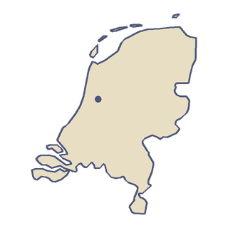
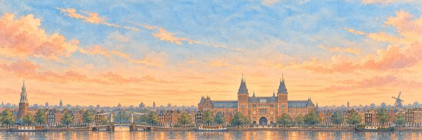
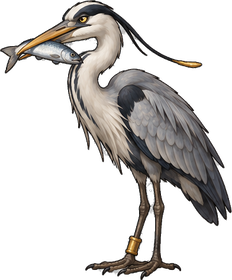
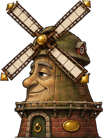

Belanda
Belanda terletak di tepi Laut Utara, tempat tiga sungai besar mencapai pantai. Sekitar seperempat negeri ini berada di bawah permukaan laut, dijaga tetap kering oleh bukit pasir, tanggul, dan pompa. Benderanya bergaris merah, putih, dan biru.
“Aku akan mendarat di dasar danau tua itu, di bawah laut.”
- Pada 1911 pilot muda Belanda Anthony Fokker menerbangkan pesawat buatannya sendiri, Spin, yang berarti laba-laba, mengitari menara gereja di Haarlem.
- Schiphol, bandara Amsterdam, berada lebih dari empat meter di bawah permukaan laut, di dasar danau yang dikeringkan pada 1852.

Bentang alam
Afsluitdijk, bendungan sepanjang 32 km yang selesai pada 1932, menutup Zuiderzee, teluk air asin dari Laut Utara. Air di belakangnya menjadi IJsselmeer, sebuah danau air tawar. Sebagian besar bekas dasar laut itu kemudian dikeringkan. Flevoland, yang sebagian besar terdiri dari tanah baru ini, menjadi provinsi kedua belas dan terbaru pada 1986, dan sebagian wilayahnya membentuk pulau buatan terbesar di dunia. Titik tertinggi di Belanda bagian Eropa adalah Vaalserberg, setinggi 322,4 meter, tempat Belanda, Belgia, dan Jerman bertemu.
Transportasi
Negeri ini punya sekitar 35.000 km jalur sepeda, sekitar seperempat dari panjang jalan rayanya. Sepeda dipakai untuk 27 persen dari semua perjalanan, dan di Amsterdam untuk 38 persen. Jalur kereta api tertua di negeri ini, dari Amsterdam ke Haarlem, dibuka pada 1839.
Makanan dan kerajinan
Keju Gouda dinamai menurut kota Gouda, di Holland Selatan, tempat keju-keju dibawa ke alun-alun pasar untuk dijual. Gouda juga tempat stroopwafel pertama kali dibuat: dua wafel tipis yang direkatkan dengan isian sirup hangat. Tembikar Delft biru putih pertama kali dibuat sekitar 1600. Sejak sekitar 1620, ketika pasokan porselen China terputus, para perajin tembikar Belanda menirunya. Pada 2017 UNESCO mencatat keahlian para penggiling, yang menjalankan kincir angin dan kincir air, sebagai warisan budaya takbenda.
Ibu kota
Amsterdam adalah ibu kota Belanda, tetapi parlemen, pemerintah, dan Mahkamah Agung berkedudukan di Den Haag.
Terbang di atas Belanda.
-



Kota 17 dari 21Amsterdam
Rijksmuseum
“Rumah-rumahnya condong ke atas air seolah sedang bercermin. Sepeda diparkir di setiap jembatan.”
Aku akan terbang menembus lorongnya, tepat di bawah lukisan-lukisan itu. Penjaganya adalah Cangak Haring dan Raksasa Kincir Angin.
Pesawat tiba di Amsterdam dari London.